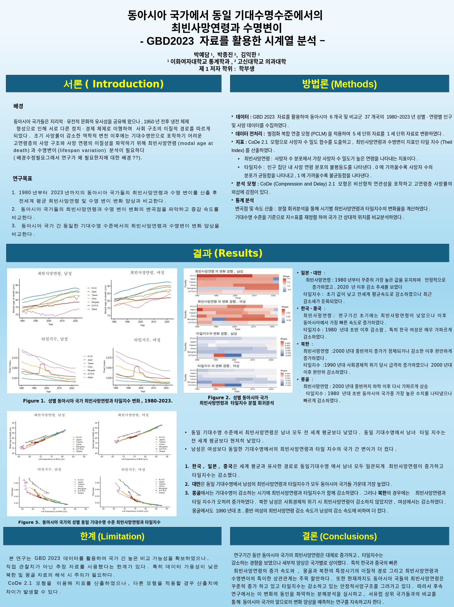

이화여자대학교 통계학과 23학번 · 컴퓨터의학 복수전공 · 경영학 부전공
관심 분야 — 의학통계 · 생존분석 · 생명과학 기반 질병 메커니즘 연구
저는 질병의 발생과 진행을 분자 및 세포 수준에서 이해하고, 이러한 생명현상을 통계적·확률적 모델로 설명하는 연구에 관심이 있습니다. 특히 베이지안 통계를 활용하여 불확실한 생물학적 데이터를 통합하고, 새로운 증거가 축적됨에 따라 질병의 메커니즘과 예후를 추론하는 연구에 흥미를 가지고 있습니다.
이를 위해 통계학을 기반으로 생명과학을 함께 공부하며, 생물학적 지식과 데이터 분석을 융합하는 연구자가 되고자 합니다. 이화여자대학교 통계학과에 재학 중이며, 컴퓨터의학을 복수전공해 통계 모델링의 대상이 되는 생명현상에 대한 이해를 함께 넓혀가고 있습니다.
지금까지 직접 수행한 연구는 고신대학교 예방의학교실에서 GBD 2023 자료를 활용해 동아시아 국가의 사망구조를 분석한 3개월간의 프로젝트입니다. 위에서 말씀드린 방향은 이 경험을 바탕으로 앞으로 발전시켜가고 싶은 연구 관심사입니다.
RESEARCH INTERESTS
저는 질병의 발생과 진행을 분자 및 세포 수준에서 이해하고, 이러한 생명현상을 통계적·확률적 모델로 설명하는 연구에 관심이 있습니다. 특히 베이지안 통계를 활용하여 불확실한 생물학적 데이터를 통합하고, 새로운 증거가 축적됨에 따라 질병의 메커니즘과 예후를 추론하는 연구에 흥미를 가지고 있습니다.
이를 위해 통계학을 기반으로 생명과학을 함께 공부하며, 생물학적 지식과 데이터 분석을 융합하는 연구자가 되고자 합니다. 생명과학은 통계 모델링의 대상이 되는 현상을 이해하기 위한 배경 지식이며, 연구의 중심은 어디까지나 통계학에 있습니다.
※ 아래는 앞으로 발전시키고 싶은 연구 방향이며, 지금까지 직접 수행한 연구는 GBD 2023 기반 동아시아 사망구조 분석 프로젝트입니다.
평소 관심 있게 파고드는 키워드
왜 같은 질환이라도 환자마다 예후가 다른지, 어떤 바이오마커가 질병의 진행을 예측하는지를 생물학적 지식과 통계 모델로 함께 설명하는 데 관심이 있습니다.
새로운 치료가 실제 생존율을 얼마나 향상시키는지, 생존분석과 베이지안 통계로 평가하는 연구를 하고 싶습니다.
DeepSurv 등 AI가 임상 데이터를 이용해 환자의 질병 경과를 얼마나 정확하게 예측할 수 있는지에 흥미를 느낍니다.
관심 있는 논문 / 레퍼런스
PHILOSOPHY
저에게 통계는 그 자체가 목적이 아니라, 질병을 이해하는 가장 강력한 도구입니다. 질병의 발생 기전과 치료 효과를 데이터로 규명하고 싶습니다.
GOALS
| 종류 | 링크 | 한줄 설명 |
|---|---|---|
| Article | [Article] 복지 이슈 관련 기사 (밀알복지재단 기자단) | 복지 이슈 취재 후 기사 작성 (기획 → 작성 → 발행) |
| Magazine | [소식지 기획+출연] | 소식지 콘텐츠 기획 및 출연/제작 참여 |
| Card News | 준비 중 | 카드뉴스 형식 콘텐츠 (추가 링크/파일 정리 예정) |
| PPT | [학생회 제작 ppt] | 행사/홍보 목적 발표자료 제작 |
| Video | [Video] 밀알복지재단 밀알콘서트 후기 브이로그 영상 | 현장 후기 영상 제작 (촬영/편집/스토리 구성) |
※ 링크 또는 파일은 대표적인 결과물 위주로 선별하여 첨부하였습니다.

고신대학교 김익한 교수 연구실에서 3개월간 진행한 연구입니다. GBD 2023 자료를 활용해 한국·일본·중국·대만·북한·몽골 동아시아 6개국의 1980~2023년 최빈사망연령(modal age at death)과 수명변이(타일지수)를 시계열로 분석하고, 전 세계 평균 및 동일 기대수명 수준에서의 변화 양상을 비교했습니다. PCLM 보간과 CoDe 2.1 모형으로 지표를 산출했고, 분절회귀분석으로 국가별 변곡점과 증감 속도를 비교했습니다. 관련 문헌(동아시아 사망률 수렴에 관한 논문) 발제를 함께 진행했고, 포스터 제작과 학생연구경연 초록 작성을 직접 맡았습니다.
팀 프로젝트로 진행한 연구로, 기후 및 토양 관련 변수를 활용해 작물 수확량에 미치는 영향을 통계적으로 분석했습니다.
다양한 인자들에 의해 분비되는 지방줄기세포 유래물질을 데이터 기반으로 분석한 연구입니다.